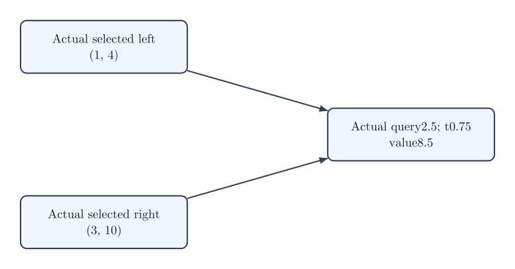
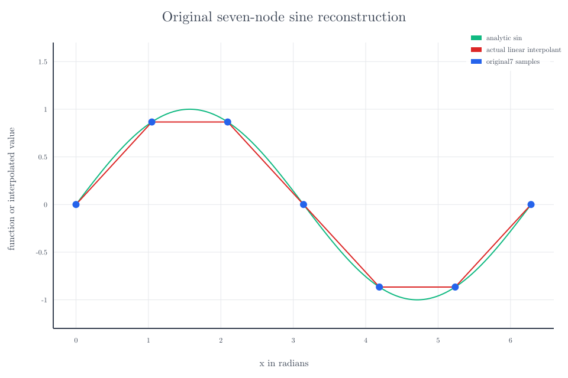
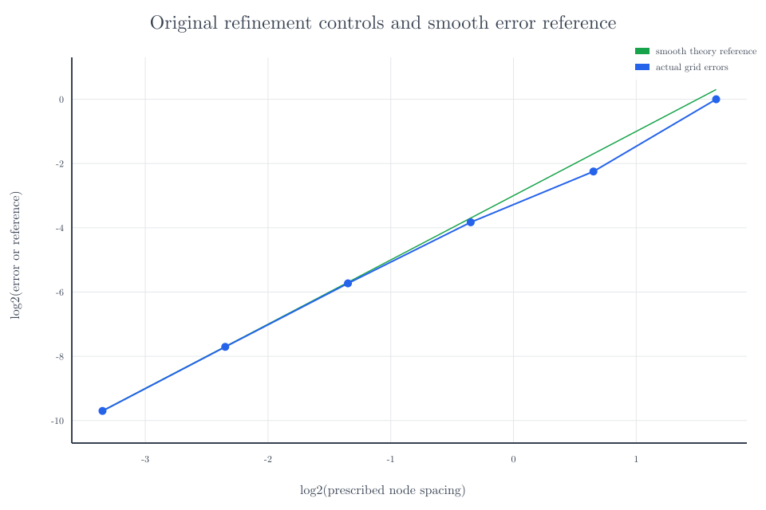
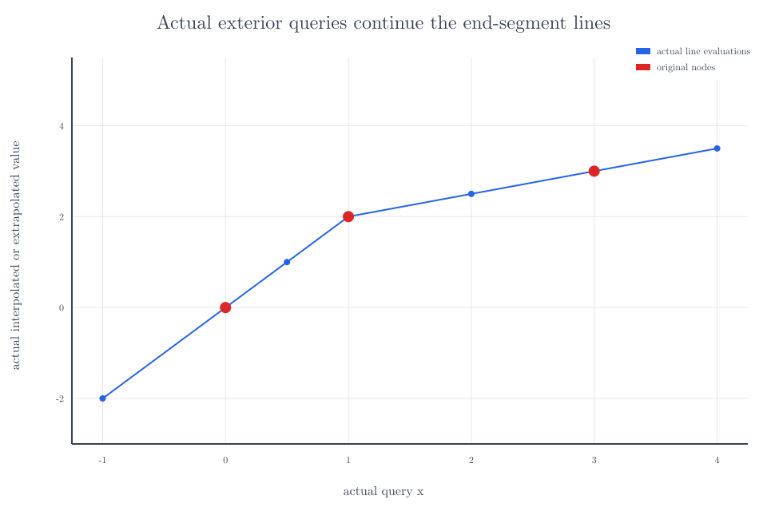

Piecewise linear interpolation
Abstract
Joining neighboring samples gives a simple continuous interpolant with local smooth-function error of second order. We inspect the actual selected interval and blend, retain the original seven-node sine figure and six-row refinement study, and distinguish interior interpolation from unbounded end-segment extrapolation. An owned native interpolator validates knots once for repeated queries; the legacy scalar API now checks every complete borrowed input.
The local line and its remainder
For selected endpoints(x_k,y_k),(x_{k+1},y_{k+1}), the line is
Inside the segment,0<=t<=1 gives a convex blend. Adjacent lines agree at knots, hence continuity, though slopes can jump. For a twice-continuously-differentiable underlying function sampled exactly, the degree1 remainder is f''(xi)*(x−x_k)*(x−x_{k+1})/2 on that local interval, so its magnitude is at most h_k^2*max|f''|/8. This is an exact-arithmetic smooth-function statement, not an unconditional floating-point enclosure, an error rate for arbitrary nonsmooth data or a bound on exterior extrapolation. Affine functions have zero mathematical interpolation error.
An actual bracket and blend
Retain the original affine nodes0,1,3,6 and values1,4,10,19 from y=3*x+1. At query2.5, the actual selected interval is[1,3], t=0.75 and value8.5. Native trace records the real endpoint guards and upper-bound mid comparisons; the report never rebuilds a binary-search history.
#include <dm/dm.hpp>
int main() {
std::filesystem::create_directories("build");
const dm::algorithms::LinearInterpolator f({0, 1, 3, 6}, {1, 4, 10, 19});
auto t = f.trace(2.5);
auto &e = t.evaluation;
std::print("| actual probe role (0:first,1:penultimate,2:mid) | actual knot index | actual knot x " "| actual predicate |\n| ---: | ---: | ---: | --- |\n");
for (auto &p : t.probes)
std::print("| {} | {} | {} | {} |\n", p.kind, p.knot, p.abscissa,
p.predicate);
std::print("\nActual selected interval {}; endpoints({},{}),({},{}); actual t {}; actual value {}.\n",
e.interval, e.left_x, e.left_y, e.right_x, e.right_y, e.fraction,
e.value);
dm::graphics::Diagram d;
d.node("left", {0, 2},
std::format("Actual selected left\n({}, {})", e.left_x, e.left_y)).node("right", {0, -2}, std::format("Actual selected right\n({}, {})", e.right_x, e.right_y)).node("blend", {7, 0}, std::format("Actual query{}; t{}\nvalue{}", e.query, e.fraction, e.value)).edge("left", "blend").edge("right", "blend").save_svg("build/linear_interp_bracket.svg");
}| actual probe role (0:first,1:penultimate,2:mid) | actual knot index | actual knot x | actual predicate |
|---|---|---|---|
| 0 | 0 | 0 | false |
| 1 | 2 | 3 | false |
| 2 | 2 | 3 | true |
| 2 | 1 | 1 | false |
Actual selected interval 1; endpoints(1,4),(3,10); actual t 0.75; actual value 8.5.

Original seven-node sine reconstruction
Retain seven uniform nodes from0 through2*pi and the original301-point figure grid, including both endpoints. The native study builds these exact prescribed grids, samples sin at each node, owns one once-validated interpolator and evaluates it on the full query grid. The analytic sine is an explicit reference, not data generated by another interpolation package. Every plotted reconstructed value comes from the actual native query API.
#include <dm/dm.hpp>
int main() {
std::filesystem::create_directories("build");
auto s = dm::algorithms::linear_interpolation_sine_study(7, 300);
std::print("| original nodes | original figure query points | actual maximum grid error | smooth-sine " "h-squared-over8 reference |\n| ---: | ---: | ---: | ---: |\n| {} | {} | {:.12f} | {:.12f} " "|\n",
s.xs.size(), s.queries.size(), s.max_grid_error,
s.error_reference);
auto p = dm::graphics::RPlot::create();
p.line(s.queries, s.exact, "analytic sin", {16, 185, 129}, 2).line(
s.queries, s.interpolated, "actual linear interpolant", {220, 38, 38}, 2).points(s.xs, s.ys, "original7 samples", {37, 99, 235}, 6).y_limits(-1.3, 1.7).title("Original seven-node sine reconstruction").x_label("x in radians").y_label("function or interpolated value").save_svg("build/linear_interp_original.svg");
}| original nodes | original figure query points | actual maximum grid error | smooth-sine h-squared-over8 reference |
|---|---|---|---|
| 7 | 301 | 0.133974596216 | 0.137077838904 |

Original refinement table and smooth second-order behavior
Retain node counts3,5,9,17,33,65 and the original1001-point error grid. Observed maxima range only over that finite grid; they are not claimed continuous suprema. For sine, max|f|<=1 gives the h^2/8 mathematical reference. Pairwise observed orders are printed with a first-row sentinel0. The plots use actual errors and the labelled theoretical reference, avoiding the claim that every finite coarse refinement must quarter a rounded grid maximum exactly.
#include <dm/dm.hpp>
int main() {
std::filesystem::create_directories("build");
std::vector<double> x, y, reference;
double previous = 0;
std::print("| original nodes | actual prescribed h | actual1001-grid maximum error | smooth " "h-squared-over8 reference | observed pairwise order, first row0 sentinel |\n| ---: | ---: | " "---: | ---: | ---: |\n");
for (std::size_t n : {3, 5, 9, 17, 33, 65}) {
auto s = dm::algorithms::linear_interpolation_sine_study(n, 1000);
std::print("| {} | {:.12f} | {:.12f} | {:.12f} | {:.8f} |\n", n,
s.spacing, s.max_grid_error, s.error_reference,
previous ? std::log2(previous / s.max_grid_error) : 0);
previous = s.max_grid_error;
x.push_back(std::log2(s.spacing));
y.push_back(std::log2(s.max_grid_error));
reference.push_back(std::log2(s.error_reference));
}
auto p = dm::graphics::RPlot::create();
p.line(x, reference, "smooth theory reference", {22, 163, 74}, 1.5).line(
x, y, "actual grid errors", {37, 99, 235}, 2).points(x, y, "",
{37, 99, 235}, 5).title("Original refinement controls and smooth error reference").x_label("log2(prescribed node spacing)").y_label("log2(error or reference)").save_svg("build/linear_interp_refinement.svg");
}| original nodes | actual prescribed h | actual1001-grid maximum error | smooth h-squared-over8 reference | observed pairwise order, first row0 sentinel |
|---|---|---|---|---|
| 3 | 3.141592653590 | 1.000000000000 | 1.233700550136 | 0.00000000 |
| 5 | 1.570796326795 | 0.210513242776 | 0.308425137534 | 2.24801710 |
| 9 | 0.785398163397 | 0.070377044116 | 0.077106284384 | 1.58073417 |
| 17 | 0.392699081699 | 0.018846269318 | 0.019276571096 | 1.90082596 |
| 33 | 0.196349540849 | 0.004788953415 | 0.004819142774 | 1.97649666 |
| 65 | 0.098174770425 | 0.001202376550 | 0.001204785693 | 1.99382162 |

Exterior values extrapolate, and finite arithmetic still has limits
With nodes0,1,3 and values0,2,3, exterior queries−1 and4 evaluate the first and last segment lines, giving−2 and3.5. Their fractions lie outside[0,1], so the interior convex-range interpretation no longer applies. Knots are returned exactly as stored. Complete data/order/query guards prevent empty, ragged, duplicate, descending or nonfinite lookup inputs.
The fallback preserves some finite results when ordinary differences overflow: for abscissae−DBL_MAX,+DBL_MAX and values1,3, query0 produces2 via widened arithmetic. That is not a promise that all finite exterior inputs have representable outputs; produced out-of-range values still throw. It also cannot recover information already lost when a caller rounded its input coordinates.
The figure shows actual end-segment continuation and actual interior values on one native interpolator, with original nodes retained.
#include <dm/dm.hpp>
int main() {
std::filesystem::create_directories("build");
const dm::algorithms::LinearInterpolator f({0, 1, 3}, {0, 2, 3});
std::vector<double> x, y;
std::print("| actual query | actual selected interval | actual fraction | actual value | actual " "exterior flag | actual numeric-node flag |\n| ---: | ---: | ---: | ---: | --- | --- |\n");
for (double q : {-1., 0., .5, 1., 2., 3., 4.}) {
auto e = f.evaluate(q);
std::print("| {} | {} | {} | {} | {} | {} |\n", q, e.interval,
e.fraction, e.value, e.extrapolated, e.exact_node);
x.push_back(q);
y.push_back(e.value);
}
const double m = std::numeric_limits<double>::max();
const dm::algorithms::LinearInterpolator wide({-m, m}, {1, 3});
auto e = wide.evaluate(0);
std::print("\nActual extreme-knot midpoint {}; actual widened fallback {}.\n",
e.value, e.widened);
auto p = dm::graphics::RPlot::create();
p.line(x, y, "actual line evaluations", {37, 99, 235}, 2).points(
x, y, "", {37, 99, 235}, 4).points(f.xs(), f.ys(), "original nodes",
{220, 38, 38}, 7).y_limits(-3, 5.5).title("Actual exterior queries continue the end-segment lines").x_label("actual query x").y_label("actual interpolated or extrapolated value").save_svg("build/linear_interp_extrapolation.svg");
}| actual query | actual selected interval | actual fraction | actual value | actual exterior flag | actual numeric-node flag |
|---|---|---|---|---|---|
| -1 | 0 | -1 | -2 | true | false |
| 0 | 0 | 0 | 0 | false | true |
| 0.5 | 0 | 0.5 | 1 | false | false |
| 1 | 1 | 0 | 2 | false | true |
| 2 | 1 | 0.5 | 2.5 | false | false |
| 3 | 1 | 1 | 3 | false | true |
| 4 | 1 | 1.5 | 3.5 | true | false |
Actual extreme-knot midpoint 2; actual widened fallback true.

Contracts and verification
The legacy scalar function fully validates borrowed knots on every call, so its total query time includes O(n) validation. The new owned interpolator validates/copies once, then uses O(log n) interval selection and O(1) ordinary query storage without rescanning all knots. Both share the same producing search/blend and preserve the ordinary finite y0+t*(y1−y0) operation order. Numeric endpoint matches use the actual stored ordinate directly; nonfinite ordinary intermediates trigger a checked widened line evaluation. No input mutation, hidden clamping or shared state is introduced.
Optional trace conservatively admits2*n+2+bit_width(n) logical input/probe records before copying/evaluation; actual captured_entries is2*n plus the real number of segment-selection comparisons and can be smaller. Default cap is one million,0 disables only that optional cap, and fields/capacities/result/runtime copies and bytes/RAM are excluded. Full knots and every actual probe are owned; validation and blend-branch checks are explicitly outside the selected search-probe counters.
Native tests compare 12100 queries with independent widened line evaluations and
check actual bracket probes, exact nodes, original sine grids, extrapolation,
finite-range fallbacks, quotas and ownership. The ten-report batch passed 101
native CTest cases, 34 directly instrumented ASan/UBSan cases, 103
compiled/executed public examples, 515/515 scoped file definitions plus 10 exact
LCG class definitions, and ten representative clangd hovers. Independent Python
integer/Fraction, explicit-label graph search, quadratic sequence DP and full
weighted-stump references passed 69430 records across all ten topics, including
a separately fitted held-out Iris model. Frozen ordinary compatibility passed
1000 Lex-BFS orders, 1000 library sorts, 100 LBG codebooks, 100 complete
five-round LogitBoost ensembles and 200 LLL bases; corrected LBG final
labels/objectives are intentionally excluded from historical compatibility. All
4 complete programs executed and all 4 native figures were rendered and visually
reviewed, with clipped legends corrected and rerun. HTML/Markdown
computed-result and figure-byte checks gate legacy retirement. Repeatable
receipts are retained in build/mepml-conversion/batch-204-213/.
References
NIST, Digital Library of Mathematical Functions,§3.3 Interpolation. The local degree1 remainder gives the interior smooth-function reference; this report distinguishes it from finite-grid observations, floating-point arithmetic and exterior extrapolation.